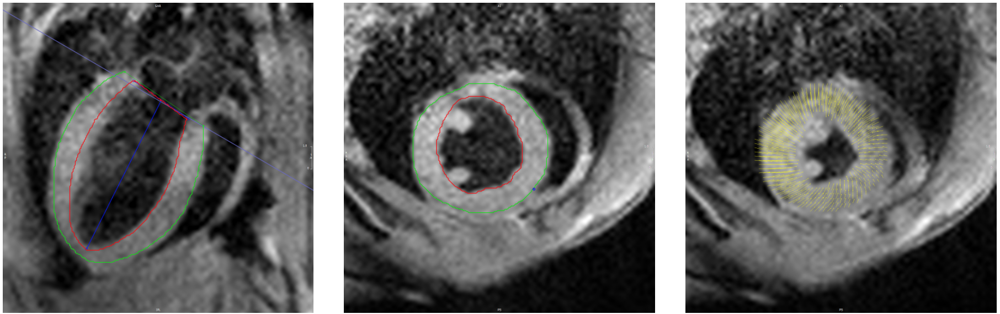

ROLE OF BAROREFLEX FEEDBACK LOOP IN LV GROWTH PREDICTION: A MULTISCALE FINITE ELEMENT MODELING STUDY IN VALVULAR DISEASES
 The heart functions within a complex system that adapts its function to alterations in loading via several mechanisms. For example, the baroreflex is a short-term feedback loop that modulates the heart's function on a beat-to-beat basis to control arterial pressure. On the other hand, cardiac growth is a long-term adaptive response that occurs over weeks or months in response to changes in left ventricular loading. In this study, we investigate the impact of a baroreflex feedback loop on left ventricular growth in simulations of valve disease. To achieve this, we integrated the effects of a short-term baroreflex feedback loop and a long-term growth algorithm into a beating multiscale finite element model of the left ventricle. The baroreflex loop modulates the system from the molecular-level function of myofilaments up to system-level parameters, such as heart rate, to control arterial pressure. Meanwhile, the growth algorithm responds to the altered stress level of the myocardium to drive long-term changes in the geometry of the left ventricle. Specifically, eccentric growth (chamber dilation) is driven by time-averaged passive stress in the myofibers, while concentric growth (wall thickening) is driven by time-averaged total stress along the myofiber direction over the cardiac cycle. Our integrated model replicated clinical measures of left ventricular growth in two types of valvular diseases - aortic stenosis and mitral regurgitation - at two different levels of severity for each case. Furthermore, our results showed that incorporating the effects of baroreflex control in simulations of left ventricular growth not only led to more realistic hemodynamics, but also impacted the magnitude of growth. Specifically, our results highlighted the role of regulating venous compliance (vasoconstriction) by the baroreflex immediately after the onset of valvular diseases, which has a significant role on the extent of LV growth in the long term.
The heart functions within a complex system that adapts its function to alterations in loading via several mechanisms. For example, the baroreflex is a short-term feedback loop that modulates the heart's function on a beat-to-beat basis to control arterial pressure. On the other hand, cardiac growth is a long-term adaptive response that occurs over weeks or months in response to changes in left ventricular loading. In this study, we investigate the impact of a baroreflex feedback loop on left ventricular growth in simulations of valve disease. To achieve this, we integrated the effects of a short-term baroreflex feedback loop and a long-term growth algorithm into a beating multiscale finite element model of the left ventricle. The baroreflex loop modulates the system from the molecular-level function of myofilaments up to system-level parameters, such as heart rate, to control arterial pressure. Meanwhile, the growth algorithm responds to the altered stress level of the myocardium to drive long-term changes in the geometry of the left ventricle. Specifically, eccentric growth (chamber dilation) is driven by time-averaged passive stress in the myofibers, while concentric growth (wall thickening) is driven by time-averaged total stress along the myofiber direction over the cardiac cycle. Our integrated model replicated clinical measures of left ventricular growth in two types of valvular diseases - aortic stenosis and mitral regurgitation - at two different levels of severity for each case. Furthermore, our results showed that incorporating the effects of baroreflex control in simulations of left ventricular growth not only led to more realistic hemodynamics, but also impacted the magnitude of growth. Specifically, our results highlighted the role of regulating venous compliance (vasoconstriction) by the baroreflex immediately after the onset of valvular diseases, which has a significant role on the extent of LV growth in the long term.
MULTISCALE FINITE ELEMENT MODELING OF LEFT VENTRICULAR GROWTH IN SIMULATIONS OF VALVE DISEASE
 Multiscale models of the cardiovascular system are emerging as effective tools for investigating the mechanisms that drive ventricular growth and remodeling. Such models can be used to evaluate the effects of molecular-level mechanisms on organ-level function, which could provide new insights for improving patient care. MyoFE is a multiscale computer framework that simulates a finite element model of the left ventricle pumping blood around the systemic circulation by bridging from molecular to organ-level mechanisms. In this study, we extend MyoFE via a growth algorithm, based on volumetric growth theory, to simulate concentric growth (wall thickening / thinning) and eccentric growth (chamber dilation / constriction) in response to valvular diseases. Specifically in our model, concentric growth is controlled by time-averaged total stress along the fiber direction over a cardiac cycle while eccentric growth responds to time-averaged intracellular myofiber passive stress over a cardiac cycle. The new framework appropriately predicted different forms of growth in response to two types of valvular disease, namely aortic stenosis and mitral regurgitation. Furthermore, simulations for each valvular disorder regained LV size and function (reversal of growth) when the disease-mimicking perturbation was removed. In conclusion, the simulations suggest that time-averaged total stress along the fiber direction and time-averaged intracellular myofiber passive stress can be used to drive concentric and eccentric growth in simulations of valve disease.
Multiscale models of the cardiovascular system are emerging as effective tools for investigating the mechanisms that drive ventricular growth and remodeling. Such models can be used to evaluate the effects of molecular-level mechanisms on organ-level function, which could provide new insights for improving patient care. MyoFE is a multiscale computer framework that simulates a finite element model of the left ventricle pumping blood around the systemic circulation by bridging from molecular to organ-level mechanisms. In this study, we extend MyoFE via a growth algorithm, based on volumetric growth theory, to simulate concentric growth (wall thickening / thinning) and eccentric growth (chamber dilation / constriction) in response to valvular diseases. Specifically in our model, concentric growth is controlled by time-averaged total stress along the fiber direction over a cardiac cycle while eccentric growth responds to time-averaged intracellular myofiber passive stress over a cardiac cycle. The new framework appropriately predicted different forms of growth in response to two types of valvular disease, namely aortic stenosis and mitral regurgitation. Furthermore, simulations for each valvular disorder regained LV size and function (reversal of growth) when the disease-mimicking perturbation was removed. In conclusion, the simulations suggest that time-averaged total stress along the fiber direction and time-averaged intracellular myofiber passive stress can be used to drive concentric and eccentric growth in simulations of valve disease.
A MULTISCALE FINITE ELEMENT MODEL OF LEFT VENTRICULAR MECHANICS INCORPORATING BAROREFLEX REGULATION
 The heart is regulated by a short-term hemodynamic reflex loop known as the baroreflex, which maintains arterial pressure at a normal level. In this study, we present a new multiscale model of the cardiovascular system named MyoFE, which incorporates a mechanistic model of contraction at the myosin level into a finite-element-based model of the left ventricle pumping blood through the systemic circulation. The model is coupled with a closed-loop feedback control of arterial pressure inspired by an algorithm previously published by our team. The reflex loop mimics the afferent neuron pathway via a normalized afferent signal derived from arterial pressure. The efferent pathway is represented by a kinetic model that simulates the net result of neural processing in the medulla and cell-level responses to autonomic drive. The control algorithm modulates not only parameters such as heart rate and vascular tone of vessels in the lumped-parameter model of systemic circulation, but also spatially modulates intracellular Ca2+ dynamics and molecular-level function of both the thick and the thin myofilaments across the 3D geometry of the left ventricle. Our study demonstrates that the baroreflex algorithm can regulate arterial pressure at different user-defined setpoints. In addition, arterial pressure is maintained in the presence of perturbations such as acute cases of aortic stenosis, mitral regurgitation, and myocardial infarction. The capabilities of this new multiscale model are crucial for future research related to computational investigations of growth and remodeling.
The heart is regulated by a short-term hemodynamic reflex loop known as the baroreflex, which maintains arterial pressure at a normal level. In this study, we present a new multiscale model of the cardiovascular system named MyoFE, which incorporates a mechanistic model of contraction at the myosin level into a finite-element-based model of the left ventricle pumping blood through the systemic circulation. The model is coupled with a closed-loop feedback control of arterial pressure inspired by an algorithm previously published by our team. The reflex loop mimics the afferent neuron pathway via a normalized afferent signal derived from arterial pressure. The efferent pathway is represented by a kinetic model that simulates the net result of neural processing in the medulla and cell-level responses to autonomic drive. The control algorithm modulates not only parameters such as heart rate and vascular tone of vessels in the lumped-parameter model of systemic circulation, but also spatially modulates intracellular Ca2+ dynamics and molecular-level function of both the thick and the thin myofilaments across the 3D geometry of the left ventricle. Our study demonstrates that the baroreflex algorithm can regulate arterial pressure at different user-defined setpoints. In addition, arterial pressure is maintained in the presence of perturbations such as acute cases of aortic stenosis, mitral regurgitation, and myocardial infarction. The capabilities of this new multiscale model are crucial for future research related to computational investigations of growth and remodeling.
MULTISCALE MODELING OF LV GROWTH IN VALVULAR DISEASES
 The heart adapts to its environment and changes its shape (referred as cardiac growth)
in response to hemodynamic loads, including pathological conditions associated with valvular
disease. In valvular disease, cardiac growth initiates as an early adaptive response that
can progress to remodeling and subsequent heart failure if the valvular dysfunction persists.
In this study, we initially extended PyMyoVent with concentric growth (wall thickening / thinning) and
eccentric growth (chamber dilation / constriction) driven by cell-level stresses in half-sarcomeres.
The heart adapts to its environment and changes its shape (referred as cardiac growth)
in response to hemodynamic loads, including pathological conditions associated with valvular
disease. In valvular disease, cardiac growth initiates as an early adaptive response that
can progress to remodeling and subsequent heart failure if the valvular dysfunction persists.
In this study, we initially extended PyMyoVent with concentric growth (wall thickening / thinning) and
eccentric growth (chamber dilation / constriction) driven by cell-level stresses in half-sarcomeres.
In the next attempt, we hypothesized the idea of concentric growth being driven by the energy used by the myocytes for contraction (expressed as myosin ATPase normalized to myofibrillar volume). The new framework reproduced clinical measures of left ventricular growth in three types of valvular disease, namely aortic stenosis, aortic insufficiency, and mitral insufficiency.
SYSTOLIC STRAIN ANALYSIS USING MRI IMAGES
 Cardiac magnetic resonance (CMR) imaging is a widely used method for assessing cardiac structure and function. Myocardial strain, which can be derived from CMR images, has been investigated as a possible diagnostic tool for estimating contractile function in the heart. Recently, feature-tracking of cine images has been used to calculate systolic strain in patients with various types of heart disease in order to predict functional recovery and clinical outcomes. Although mouse models are commonly used to enhance our understanding of cardiac disease, strain derived using feature-tracking of cine images has not been widely investigated in mice.
BAROREFLEX CONTROL OF ARTERIAL PRESSURE
 Baroreceptors are sensors located at the carotid sinus and aortic arch which are parts of
the short-term hemodynamics feedback control of arterial pressure within our body. The main
goal of baroreflex mechanism is to maintain arterial pressure within the normal range by regulation
of cardiac function via sympathetic and parasympathetic neuron pathways. Thereby, having a model of
hemodynamic feedback loop implemented into multiscale models of cardiovascular function is necessary.
PyMyoVent is a multiscale model of a single left ventricle that pumps blood around a systemic model of
circulation. We have implemented a model of baroreflex control of arterial pressure to PyMyoVent
that regulates chronotropism, cell-level contractility, and vascular tone.
Baroreceptors are sensors located at the carotid sinus and aortic arch which are parts of
the short-term hemodynamics feedback control of arterial pressure within our body. The main
goal of baroreflex mechanism is to maintain arterial pressure within the normal range by regulation
of cardiac function via sympathetic and parasympathetic neuron pathways. Thereby, having a model of
hemodynamic feedback loop implemented into multiscale models of cardiovascular function is necessary.
PyMyoVent is a multiscale model of a single left ventricle that pumps blood around a systemic model of
circulation. We have implemented a model of baroreflex control of arterial pressure to PyMyoVent
that regulates chronotropism, cell-level contractility, and vascular tone.